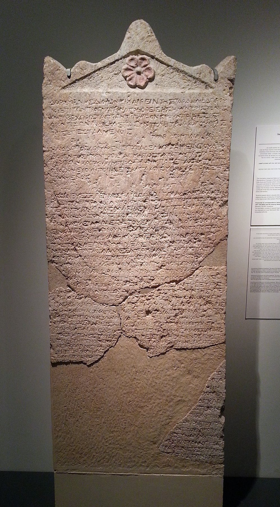

Heliodorus Stele

- Find Name
- Heliodorus Stele
- Description
- A Hebron limestone stele, 110 by 57.5 cm, inscribed in Koine Greek and dated to 178 BCE (Seleucid year 134, month Gorpiaios). It preserves a dossier of three letters: King Seleucus IV Philopator writes to his chief minister Heliodorus appointing Olympiodorus over the sanctuaries of Coele-Syria and Phoenicia, and the order is forwarded down the chain to Dorymenes and then Diophanes. The main part reached the Israel Museum via the antiquities market (acquired by Michael Steinhardt in 2007), while three further fragments were found in licensed excavations at subterranean complex 57, Maresha, in 2005-2006 and joined to it.
- Historical Period
- Hellenistic Period (332-63 BC)
- Evidence Class
- Contextual
- Interpretations
- PROVENANCE AND CONTENT CAUTIONS: the main part of the stele came through the antiquities trade and was among 180 looted artefacts Steinhardt agreed to surrender to the Manhattan District Attorney in December 2021, though its authenticity was confirmed by patina and soil analysis and by the Maresha fragments. The stele confirms Heliodorus as a real historical figure, but it names Olympiodorus, not Heliodorus, as sanctuary overseer - so it does NOT directly confirm the 2 Maccabees 3 episode in which Heliodorus tries to seize the Jerusalem temple treasury; scholars explain the gap either by Olympiodorus's oversight provoking Heliodorus's intervention, or by 2 Maccabees substituting the more famous minister. EvidenceClass is therefore Contextual, not Direct.
- Alternative Names
- Heliodoros Stela;Heliodoros Stele
- Related Places
- Biblical Significance
- The stele illuminates the Seleucid pressure on temple treasuries that forms the background to 2 Maccabees 3 and to the persecution under Antiochus IV; no canonical passage is cited because 2 Maccabees is outside the 66-book Protestant canon used on this site.
- Artifact Date
- 178 BCE
- Current Location
- Israel Museum, Jerusalem
- Date Discovered
- 2005-2006 (excavated fragments)
- Discovery Location
- Maresha, Israel (subterranean complex 57); main fragments via the antiquities market
- Timeline Era
- Return and Second Temple
Awaiting Review Not yet checked against scholarly sources. Treat its claims as provisional until this entry is reviewed. About verification
Sources: https://en.wikipedia.org/wiki/Heliodorus_stele
https://www.posenlibrary.com/entry/heliodoros-stela
https://www.posenlibrary.com/entry/heliodoros-stela
Last reviewed: not yet reviewed